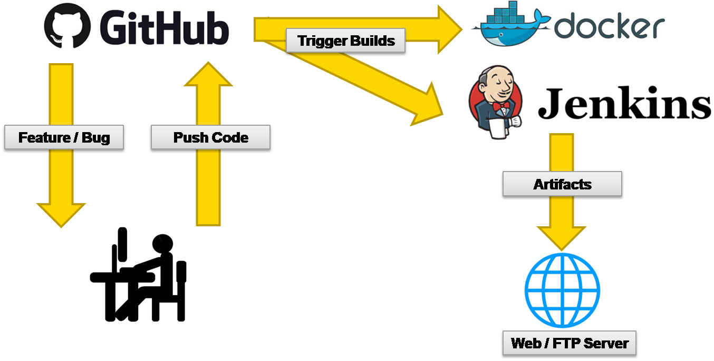

The Open Source Way
Way to sucess
|
Agile Development
Best Practice
- Code/Story Reviews
- Feature Flags & Feature Branches
- Continuous Delivery
- Code Quality Monitoring
GitHub - Be Social!
|
|
|
Workflow
Continuous Delivery Pipeline
Test Pyramid
|
Virtual Machine vs. Container
(exemplified by Docker)
Advantages of Container Technology
- Isolation of environments
- Repository for versioning and distribution
- Reproducible application environment
- Dockerfile, docker-compose.yml
- Starting containers on-the-fly
- Optimized for parallelization
- Less memory overhead
- Shared Linux kernel
Sakuli End-2-End Testing Container
CI Demo Setup
CI Demo Setup
Links

|
https://labs.consol.de
https://github.com/ConSol/sakuli
https://github.com/toschneck/sakuli-example-bakery-testing |


|
|
Thank you!

Tobias Schneck
tobias.schneck@consol.de
|
Tim Keiner
tim.keiner@consol.de
|
|||||||||
|
||||||||||